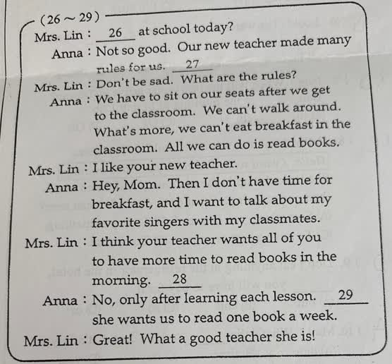
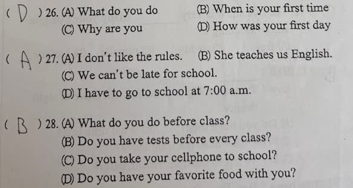
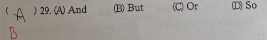

分享原卷｜第29題
完整原題
作答所需文章／材料
Mrs. Lin: ___26___ at school today? Anna: Not so good. Our new teacher made many rules for us. ___27___ Mrs. Lin: Don’t be sad. What are the rules? Anna: We have to sit on our seats after we get to the classroom. We can’t walk around. What’s more, we can’t eat breakfast in the classroom. All we can do is read books. Mrs. Lin: I like your new teacher. Anna: Hey, Mom. Then I don’t have time for breakfast, and I want to talk about my favorite singers with my classmates. Mrs. Lin: I think your teacher wants all of you to have more time to read books in the morning. ___28___ Anna: No, only after learning each lesson. ___29___ she wants us to read one book a week. Mrs. Lin: Great! What a good teacher she is! 題組第26～28題的原選項，供判讀本題上下文： 26. (A) What do you do (B) When is your first time (C) Why are you (D) How was your first day 27. (A) I don’t like the rules. (B) She teaches us English. (C) We can’t be late for school. (D) I have to go to school at 7:00 a.m. 28. (A) What do you do before class? (B) Do you have tests before every class? (C) Do you take your cellphone to school? (D) Do you have your favorite food with you?先想一想，再查看答案、解說與原圖
逐項解析
| 選項與原句 | 判讀 | 句意與判斷理由 |
|---|---|---|
| (A) And | 不選 | 可作補充說明，文法未必錯；但依Anna抱怨及原卷預期，B的轉折語氣較符合本題。 |
| (B) But | 應選 | 前句澄清考試不那麼頻繁，後句卻指出另一項閱讀要求，符合原卷期待的轉折。 |
| (C) Or | 不選 | 不是在兩項規定中任選其一，沒有選擇關係。 |
| (D) So | 不選 | 前後不是考試頻率造成閱讀量要求的因果關係。 |
詳細說明與解題步驟
先看Anna的立場。她一開始說Not so good，並抱怨不能在教室吃早餐、不能和同學聊天；媽媽卻贊成老師的安排。媽媽詢問是否每堂課前都考試，Anna澄清只在學完一課後考，接著帶出老師仍要求每週讀一本書。依原卷訂正，這裡用But，把考試沒有那麼頻繁與另一項閱讀要求連成轉折。
關鍵句翻譯：
No, only after learning each lesson. → 不是，只在學完每一課後考試。
But she wants us to read one book a week. → 但是，她要我們每週讀一本書。
Great! What a good teacher she is! → 太好了！她真是一位好老師！這是媽媽的反應，不能因此認定Anna也在讚美老師。
want + 人 + to V表示希望／要某人做某事；one book a week是一週一本書。
And本身可用來補充另一項規定，單看這兩句並不是文法錯誤；本題選B是依Anna前文抱怨與原卷預期的轉折語氣，不應教成And在所有這類句子都不能使用。Or表示選擇，沒有二選一的情境；So表示因果，考試頻率並非每週閱讀要求的原因。
原AI第一次選And，後來才隨對話更正為But。本題保留完整對話、相關選項及原卷訂正B；上述語境說明另列確認卡。
核對：[Cambridge Grammar：But](https://dictionary.cambridge.org/grammar/british-grammar/but)。
① Anna在抱怨，媽媽卻贊成
Anna 一開始說 Not so good，抱怨沒時間吃早餐、想和同學聊天。媽媽則喜歡老師的安排。先分清說話者立場，不能把兩人的反應混在一起。
② 考試沒那麼頻繁，還有閱讀要求
Anna 澄清只在學完一課後考試，接著提出老師還要求 one book a week，一週一本書。依前文抱怨與原卷預期，用 But 帶出另一項要求的轉折。
③ Great!是媽媽的反應，不是Anna的
媽媽稱讚老師，不代表 Anna 也在讚美。And 可補充另一項規定，單看文法未必錯；本題保留已確認的 B But，依完整對話讀語境。
④ 先看誰在抱怨，再讀But的轉折
依原卷答案 B：But
- And 可表補充，不教成一律不能使用。
- Or 是選擇、So 是因果，本文不符。
- want＋人＋to V：要某人做某事；一週一本是 one book a week。
核對註記：已依原卷或完整文字核對並獨立解題；對應教材課次未確認，歸綜合。
原圖（僅本題）


